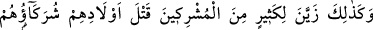
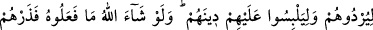
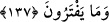

kendilerine verdiği rızkı, Allah’a iftira ederek (kadınlara) haram kılanlar,
muhakkak ki ziyana uğramışlardır. Onlar gerçekten sapmışlardır ve doğru yolu
bulacak da değillerdir.
Müşrik Araplar “Allah’ın yarattığı ekinlerden ve hayvanlardan Allah’a pay
ayırdılar.” Putlarına da aynı şekilde pay ayırdılar. “Zanlarınca:” Yani Allah Teâlâ’nın
emri ile olmaksızın kendi bâtıl iddialarına göre: “Bu Allah’a, bu da ortaklarımıza”
yani ticari, zîrâi ve hayvanî mallarımızda, bize ortak olan ilahlarımıza “dediler.”
Rivayet edilir ki, Cahiliye Arapları ekinlerinden ve ürünlerinden bir kısmını Allah
için, bir miktarını da ilâhları için ayırırlardı. Bunlardan Allah için ayırdıklarını
misafirlere ve yoksullara sarfederlerdi. İlâhları için ayırdıklarını ise putların
hizmetlerine harcarlar ve onların önünde kurban ederlerdi. Bu esnada şayet Allah için
ayırdıklarından bir şeyin daha iyi olduğunu görürlerse, onu Allah’a adamaktan vazgeçip
ilahlarına tahsis ederlerdi. Tanrıları için ayırdıkları değerli olursa olduğu gibi
bırakırlardı. “Allah zengindir, bunlara muhtaç değildir.” derlerdi. Bunu da ilâhlarını
Allah’dan çok sevdikleri ve Allah’a tercih ettikleri için yaparlardı.
Ekin ve hayvanların ürünlerinden “ortakları için ayrılan Allah’a ulaşmıyor,”
fakirlere ve misafirlere verilmiyordu. Onlar: “Allah dileseydi, kendi payını çoğaltırdı.”
diyorlardı.
“Fakat Allah için ayrılan ortaklarına” önlerinde kurbanlar kesilerek ve onların
hizmetinde harcanmak sûretiyle putlara “ulaşıyor.” Şöyle ki, şayet ilâhlarına ayırdıkları
hisse nemalanmazsa, Allah Teâlâ için ayırdıkları nemalanan hisse ile değiştirip onu
ilâhlarına tahsis ediyorlardı.
“Ne kötü hüküm veriyorlar!” İlahlarını Allah Teâlâ’ya tercih ederek ve kendilerine
din olarak emredilmeyen şeyleri yapmak hususunda verdikleri hüküm ne kötü hükümdür.
137. Bunun gibi ortakları, müşriklerden çoğuna çocuklarını (kızlarını) öldürmeyi
hoş gösterdi ki, hem kendilerini mahvetsinler hem de dinlerini karıştırıp bozsunlar!
Allah dileseydi bunu yapamazlardı. Öyle ise onları uydurdukları ile başbaşa bırak!
“Yine” kestikleri kurbanları Allah’a ve ortaklarına taksim etmeyi süslü gösterdikleri
gibi “ortakları,” cinlerden ya da putlara hizmet edenlerden olan dostları
“müşriklerden çoğuna evladlarını öldürmeyi süslü gösterdi.”
Câhiliyye devrinde yaşayan insanlar, fakirlik, evlendirme ya da esir edilmelerinden